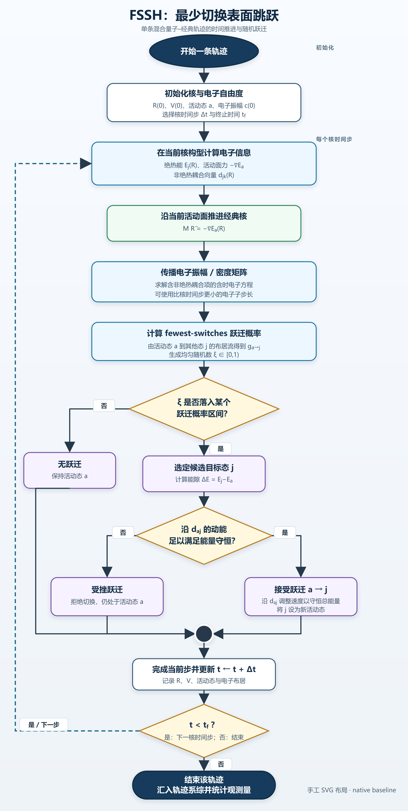
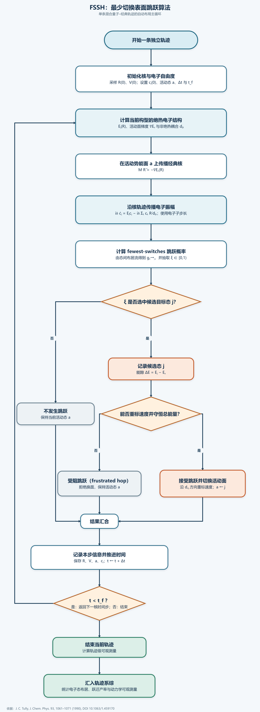

Research Engineering Practice
Codex Skills as Workflow Engineering
A good Codex skill is not a long prompt that asks the model to be more careful. It is a small workflow architecture that assigns semantic judgment to the model, deterministic transformations to software, and acceptance decisions to explicit tests. A flowchart experiment made this distinction concrete: Codex could draw a scientifically correct FSSH algorithm by hand, but reliable layout required more than better wording.
1. The bottleneck was not knowing the algorithm
Fewest-switches surface hopping (FSSH) is a useful stress test because its control flow is simple enough to audit yet structurally awkward to draw. A trajectory advances classical nuclei on an active electronic surface, propagates electronic amplitudes, samples a possible hop, checks energy conservation, merges accepted, frustrated, and no-hop outcomes, then returns through a time-step loop. The scientific content follows Tully's original mixed quantum-classical construction; the drawing problem is the combination of branching, merging, labels, and a long feedback edge.
Codex did understand this structure. In a native baseline, it directly wrote an SVG with explicit node coordinates and connector paths. The result was attractive and editable, but the first rendered pass contained a connector that ran through another node. Codex detected the defect only after viewing the rasterized output, then manually changed the polyline. This is an important distinction: the model could repair the picture, but geometry remained an iterative visual judgment rather than a guaranteed transformation.

{kind=link}
2. Review automation and layout automation solve different problems
The first workflow improvement was an iterative flowchart skill. It required a requirements summary, drawing, rendering, visual inspection, independent review, and revision until approval. This removed the user from routine pass-by-pass judgment and made omissions easier to catch. However, the model still chose global coordinates and routed edges manually. The workflow automated quality control without changing the geometric source of error.
The next skill changed the division of labor. Codex described a semantic graph—nodes, edge meanings, ports, branch labels, merge points, and the feedback edge—while ELK performed layered node placement and orthogonal edge routing. Codex still decided what the diagram meant and which constraints mattered, but it no longer pretended that language-model intuition was a graph-layout algorithm.

{kind=link}
3. A controlled comparison
| Workflow | Model responsibility | Deterministic responsibility | Observed outcome |
|---|---|---|---|
| Native prompt | Semantics, coordinates, routing, styling, and self-review | SVG parser and rasterizer only | Usable final diagram; one connector-through-node defect required manual path repair after rendering |
| Iterative review skill | Semantics, coordinates, routing, and revision decisions | Rendering and checklist execution | User review burden decreased, but layout quality still depended on model-generated geometry |
| Auto-layout skill | Requirements, semantic graph, constraints, and diagnosis | Node placement, orthogonal routing, serialization, and repeatable rendering | Editable 17-node/19-edge artifact with explicit loop handling and independent PASS |
This is not evidence that ELK always produces a better-looking diagram. The stronger conclusion is narrower: once the graph semantics and constraints are explicit, global geometry becomes reproducible and inspectable. When the outer loop was initially treated like an ordinary edge, the right fix was to declare model-order cycle breaking and mark the loop as feedback—not to move a collection of SVG coordinates. The correction therefore became a reusable rule in the generator rather than a one-off visual patch.
4. The three-layer skill architecture
A reliable skill separates three layers that are often mixed together in one prompt.
- Semantic contract. State what must exist, what must not be added, which ambiguities require a question, and what assumptions are allowed. For the FSSH diagram, this included the three hop outcomes, an explicit merge, energy-conserving velocity adjustment, and a time-step feedback loop.
- Deterministic mechanism. Move geometry, serialization, formatting, compilation, or other algorithmic work into a script or dedicated engine. The model selects options and interprets failures; the tool repeatedly applies the same transformation.
- Evidence-based acceptance. Validate structure, render the complete artifact, inspect high-risk regions, and compare the result with a written checklist. A reviewer should distinguish hard failures from optional aesthetic suggestions.
The layers communicate through explicit artifacts: a requirements ledger, a canonical semantic source, a generated editable file, a rendered preview, and an acceptance result. This artifact chain is more useful than asking Codex to “remember what looked wrong last time.”
5. Use an intermediate representation
The most important technical choice was not ELK itself; it was introducing a semantic intermediate representation. Node identifiers remained stable across revisions. Edges named their source and target ports. Branches and merges were first-class objects. The rendered SVG was an output, not the only source of truth.
This pattern generalizes well. A document skill can use a structured outline before DOCX rendering. A simulation skill can use a validated configuration schema before writing engine-specific inputs. A website skill can use content data before generating cards and metadata. An intermediate representation gives Codex a compact surface for reasoning and gives software a deterministic surface for execution.
A good canonical source should have:
- stable identifiers that survive layout or style changes;
- semantic fields rather than generated coordinates whenever possible;
- enough constraints to prevent unsafe freedom, but not a transcript of every past edit;
- a validator that can catch missing references, duplicate identifiers, or unsupported options before rendering.
6. Write the skill around decisions, not prose
OpenAI's current guidance describes a skill as a directory containing a required SKILL.md and optional scripts, references, and assets. Codex initially sees the name and description, then loads the full instructions when the task matches. This progressive-disclosure model favors concise routing instructions over a monolithic manual.
An effective SKILL.md should therefore answer operational questions:
- Trigger: which tasks should activate the skill, and which nearby tasks should not?
- Input contract: what information is required before execution?
- Canonical source: which artifact is edited when the result is wrong?
- Tool boundary: which deterministic work belongs to scripts or engines?
- Acceptance: what observations produce PASS or REVISE?
- Stop condition: when should the workflow report a remaining conflict instead of tuning forever?
Long domain explanations, option catalogs, and examples can live under references/. Stable generators and validators belong under scripts/. Templates and style assets belong under assets/. The main instruction file should route Codex through the workflow and tell it which supporting resource to load when needed.
my-skill/
├── SKILL.md # trigger, contracts, stages, acceptance, stop rules
├── scripts/ # deterministic generation and validation
├── references/ # domain rules and tool-specific options
└── assets/ # templates and reusable visual resources7. Verification must be designed, not appended
“Review the result carefully” is too vague to be reliable. The flowchart skill converted review into observable questions: Are all required branches present? Do they enter an explicit merge? Does an edge pass through a node or label? Is the feedback direction unambiguous? Are the SVG groups still editable? Does the output record the layout engine and version?
Independent review is most useful when the reviewer receives the requirements and artifacts but not the drawing agent's conclusions. The reviewer should begin with PASS or REVISE, list hard issues separately from suggestions, and cite concrete nodes or edges. A bounded revision loop prevents optional aesthetic preferences from expanding into endless polishing.
Preserve the older workflow when making a material architectural change. A downgraded or frozen control is not clutter: it makes it possible to test whether a new skill truly improved reliability or merely changed style.
8. Choose the right extension mechanism
| Need | Best starting point | Reason |
|---|---|---|
| One-off, low-risk task | Prompt | The setup cost of a reusable workflow is not justified |
| Repeated task with domain rules and acceptance criteria | Skill | Preserves instructions, examples, resources, and scripts across tasks |
| Stable transformation or calculation | Script or CLI inside a skill | Deterministic code is easier to test than repeated natural-language execution |
| Authenticated external system or live data source | Connector, MCP server, or plugin | The task needs a capability and permission boundary, not only instructions |
A skill should orchestrate these mechanisms rather than replace them. In the flowchart case, the skill did not make Codex into a layout engine; it taught Codex when and how to call one, how to express constraints, how to inspect the output, and how to preserve evidence.
9. A reusable construction recipe
- Start from one working conversation or manually completed example.
- Extract the successful decision sequence; do not preserve the entire debugging transcript.
- Write a requirements ledger and explicit acceptance checklist.
- Identify steps that should be deterministic and move them into scripts or dedicated engines.
- Introduce a canonical intermediate representation with stable identifiers.
- Generate both an editable artifact and a rendered preview.
- Inspect the whole artifact plus risk-heavy crops or diagnostics.
- Use an independent PASS/REVISE review with hard issues separated from suggestions.
- Revise the smallest responsible semantic rule or tool option.
- Freeze a successful version and keep the previous workflow as a comparison when the architecture changes.
A compact, domain-neutral starting point is available as verified-artifact-skill-template.md. It defines an input contract, canonical source, deterministic generation step, bounded verification loop, evidence bundle, and division of responsibilities.
10. Result and limitation
The final auto-layout FSSH artifact passed an independent review for scientific completeness, branch/merge structure, feedback direction, line routing, cropping, editability, and engine metadata. The experiment also showed why a skill should not be judged only by its final screenshot. The stronger result was architectural: a layout defect could be corrected by changing semantic constraints and generator behavior, then regenerated consistently.
Skills do not eliminate model judgment. Codex still has to interpret the scientific method, choose the appropriate abstraction, diagnose whether a bad result comes from semantics or layout, and decide when a reviewer suggestion is optional. A skill improves reliability by concentrating judgment at explicit decision points and removing work that software can perform more predictably.
Conclusion
The most effective way to write a Codex skill is to treat it as workflow engineering. Begin with a demonstrated success, separate semantic reasoning from deterministic execution, make the intermediate state editable, and turn quality into observable acceptance checks. The goal is not to make Codex follow more prose. The goal is to give it a small, testable operating system for one class of problems.
References
- OpenAI, Build skills.
- OpenAI, Save workflows as skills.
- Eclipse Layout Kernel, Layered cycle-breaking strategy.
- Graphviz, DOT hierarchical layout documentation.
- J. C. Tully, Molecular dynamics with electronic transitions, J. Chem. Phys. 93, 1061–1071 (1990).